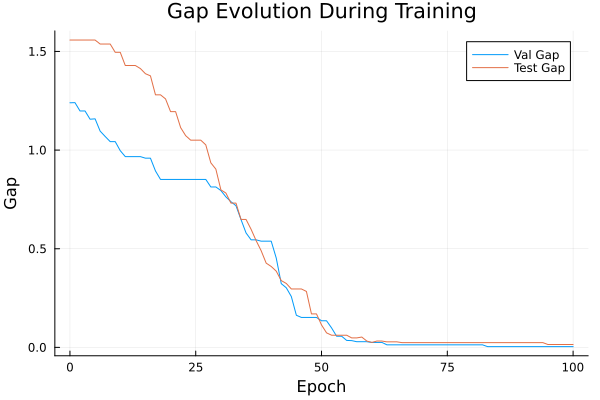
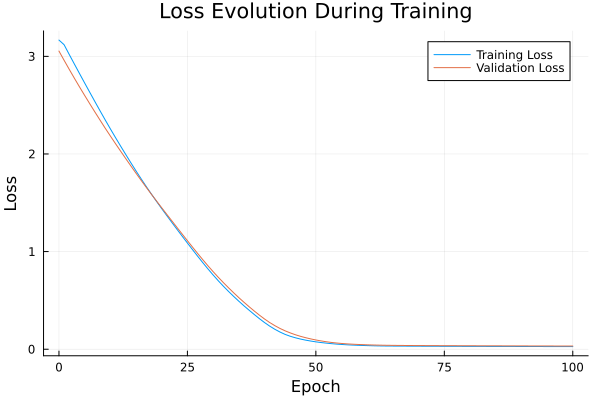

Basic Tutorial: Training with FYL on Argmax Benchmark
This tutorial demonstrates the basic workflow for training a policy using the Perturbed Fenchel-Young Loss algorithm.
Setup
using DecisionFocusedLearningAlgorithms
using DecisionFocusedLearningBenchmarks
using MLUtils: splitobs
using PlotsCreate Benchmark and Data
b = ArgmaxBenchmark()
dataset = generate_dataset(b, 100)
train_data, val_data, test_data = splitobs(dataset; at=(0.3, 0.3, 0.4))(DecisionFocusedLearningBenchmarks.Utils.DataSample{@NamedTuple{}, @NamedTuple{}, Matrix{Float32}, Vector{Float32}, Vector{Float32}}[DataSample(x=Float32[-0.210017 -0.108706 … -0.774053 0.8568; -1.58523 -1.19346 … 0.334941 0.852974; … ; -0.693174 0.413721 … 0.954339 -0.520699; -1.40895 0.941787 … 1.42323 -1.1462], θ=Float32[1.47663, 0.389574, -3.73247, -0.640098, 0.0751056, 0.48795, 1.80497, -0.364153, 0.426281, -0.740113], y=Float32[0.0, 0.0, 0.0, 0.0, 0.0, 0.0, 1.0, 0.0, 0.0, 0.0]), DataSample(x=Float32[0.0499661 -1.23372 … 1.36846 -0.965723; 1.00952 0.974726 … 2.34327 1.3717; … ; 0.836826 -1.28488 … 1.82131 -1.25482; 0.439339 0.334501 … -1.10102 -0.410827], θ=Float32[-0.567166, -1.4198, 0.382364, 1.45926, -1.80517, -2.16064, -0.49707, -1.48849, 0.59927, -2.02905], y=Float32[0.0, 0.0, 0.0, 1.0, 0.0, 0.0, 0.0, 0.0, 0.0, 0.0]), DataSample(x=Float32[0.480514 2.12897 … -0.307883 0.39527; 0.00675565 0.338261 … -0.531471 -0.0710131; … ; 0.56862 0.132468 … -0.480336 -0.250922; 0.366901 0.45977 … 0.0539607 1.48408], θ=Float32[-0.966566, -0.95773, -0.36542, -0.299081, -0.728449, -0.153686, -0.381614, -1.71051, 0.379779, -0.984913], y=Float32[0.0, 0.0, 0.0, 0.0, 0.0, 0.0, 0.0, 0.0, 1.0, 0.0]), DataSample(x=Float32[1.37017 -1.84038 … -0.810787 0.0330693; 0.554633 0.640883 … 0.755885 1.69285; … ; -0.901993 0.701618 … -0.372824 -0.579563; -0.34121 0.654307 … -1.79906 -0.19143], θ=Float32[-2.00469, 0.935687, 1.22285, -0.986281, 0.310063, 1.68349, -2.20521, 0.513781, 0.92006, -1.50498], y=Float32[0.0, 0.0, 0.0, 0.0, 0.0, 1.0, 0.0, 0.0, 0.0, 0.0]), DataSample(x=Float32[0.658154 -1.20653 … 1.04926 -0.747397; 2.18671 -1.27165 … 0.540964 0.2599; … ; 1.23653 0.0751913 … -0.879003 -1.70465; -0.0348131 1.79474 … 1.14906 -0.958367], θ=Float32[-1.71755, 0.42267, 0.582613, -0.677731, -0.141983, -0.275957, 3.25292, 1.76204, -2.4403, -1.20968], y=Float32[0.0, 0.0, 0.0, 0.0, 0.0, 0.0, 1.0, 0.0, 0.0, 0.0]), DataSample(x=Float32[0.581183 -0.788346 … -0.259278 0.5287; 0.848818 -0.864902 … 1.24542 -0.92096; … ; 0.510589 -0.220744 … -0.358716 1.35728; -1.08944 -0.368613 … 0.581397 -0.788595], θ=Float32[-0.880853, 1.21065, 1.49959, 0.11657, 1.83945, 0.919674, -0.480244, -1.15146, -1.84996, 2.09871], y=Float32[0.0, 0.0, 0.0, 0.0, 0.0, 0.0, 0.0, 0.0, 0.0, 1.0]), DataSample(x=Float32[0.00769485 0.358777 … -0.810353 0.725976; 1.3862 -0.114374 … 1.01441 2.1461; … ; 0.272113 2.19457 … -0.518791 -0.0471662; -0.383558 -0.107419 … -0.665586 -0.692026], θ=Float32[-0.9174, 2.63121, 1.75297, 2.78416, 0.594165, -0.137981, 2.05273, 0.452502, -0.417191, -0.671735], y=Float32[0.0, 0.0, 0.0, 1.0, 0.0, 0.0, 0.0, 0.0, 0.0, 0.0]), DataSample(x=Float32[0.43325 0.654438 … -0.0899366 1.49001; -0.176335 -0.984666 … 1.56383 0.37807; … ; -0.378207 -0.463705 … 0.243752 0.0594054; 0.192671 -0.651052 … -1.43401 0.460276], θ=Float32[-0.958421, 0.623685, 0.876751, -2.9727, -3.12194, 0.815025, -0.492286, -0.701156, -0.0162512, -1.10766], y=Float32[0.0, 0.0, 1.0, 0.0, 0.0, 0.0, 0.0, 0.0, 0.0, 0.0]), DataSample(x=Float32[0.755314 -0.0473691 … 0.745354 0.00818993; -0.220386 0.237987 … 0.40383 1.66714; … ; 0.799551 -0.534327 … 1.18147 -1.55099; -1.30999 1.92077 … -1.20093 0.752866], θ=Float32[1.04684, -2.32044, -0.415841, -2.6379, 0.142364, -0.831556, -0.955129, -0.420347, 0.11331, -3.58378], y=Float32[1.0, 0.0, 0.0, 0.0, 0.0, 0.0, 0.0, 0.0, 0.0, 0.0]), DataSample(x=Float32[0.45987 -1.81091 … -0.803885 1.17357; -0.722984 -0.795648 … 1.32203 -0.672918; … ; -0.638111 0.312948 … -1.54994 1.27363; 1.42399 -0.331613 … 2.9916 0.581165], θ=Float32[-0.757294, 1.74335, -0.296608, 0.435448, 1.05914, -1.62837, -2.53662, -1.94517, -3.25948, 0.189979], y=Float32[0.0, 1.0, 0.0, 0.0, 0.0, 0.0, 0.0, 0.0, 0.0, 0.0]) … DataSample(x=Float32[0.254776 0.859869 … 0.48701 -0.869914; 0.861248 0.157841 … 2.02648 -0.0577425; … ; 0.633373 -0.563581 … 1.15202 0.2958; -1.14671 0.960052 … -0.206024 -0.817486], θ=Float32[1.91571, -1.20451, 0.249341, -1.88662, 0.0963662, 2.62097, 1.71261, 0.814296, -1.95089, 1.70396], y=Float32[0.0, 0.0, 0.0, 0.0, 0.0, 1.0, 0.0, 0.0, 0.0, 0.0]), DataSample(x=Float32[0.531637 0.200977 … -0.731652 0.964035; 0.740109 -0.321132 … -1.21558 1.9611; … ; 0.632407 -0.185582 … 0.0293729 -2.15008; 0.113318 -0.260352 … 0.20863 -0.711815], θ=Float32[0.0822604, 0.0863003, 0.236316, 2.86717, 0.3904, -1.35081, 0.859936, -0.086705, 0.850582, -3.12502], y=Float32[0.0, 0.0, 0.0, 1.0, 0.0, 0.0, 0.0, 0.0, 0.0, 0.0]), DataSample(x=Float32[0.0380589 -0.357951 … -2.33597 1.06482; 1.45524 -0.037979 … -0.692242 -1.03821; … ; -1.06037 -0.494623 … -0.0651057 -0.967785; 0.429234 -0.197018 … -1.11611 1.33347], θ=Float32[-2.07144, 0.252001, -1.95495, -0.777536, -0.0991859, -1.32607, -1.5974, 2.44704, 1.34809, -1.62338], y=Float32[0.0, 0.0, 0.0, 0.0, 0.0, 0.0, 0.0, 1.0, 0.0, 0.0]), DataSample(x=Float32[0.152608 1.67615 … -0.283193 -0.62241; 0.347648 0.244784 … -0.745336 2.76377; … ; 1.44847 0.754438 … 0.205152 0.159389; 0.603429 0.169289 … 0.244091 2.02835], θ=Float32[0.864761, -1.6613, 0.312469, 0.900478, -0.338089, 0.167484, -1.06435, -0.507804, 0.423153, -3.4751], y=Float32[0.0, 0.0, 0.0, 1.0, 0.0, 0.0, 0.0, 0.0, 0.0, 0.0]), DataSample(x=Float32[-0.954346 0.7759 … -0.255411 0.154391; -1.70538 -1.61515 … -0.046252 0.377462; … ; 0.612784 0.56909 … -0.295421 0.577174; -1.098 0.423998 … 0.429928 0.00715922], θ=Float32[2.97723, 1.58855, 1.61321, 2.09409, 0.170266, -0.339511, 1.63239, -0.526579, 0.463339, 0.589993], y=Float32[1.0, 0.0, 0.0, 0.0, 0.0, 0.0, 0.0, 0.0, 0.0, 0.0]), DataSample(x=Float32[0.963005 -1.43866 … -1.44299 -0.387276; -1.16274 1.12584 … -0.702749 -0.361398; … ; 0.548305 0.746762 … 0.130245 -0.693279; -0.827648 -0.0985356 … 0.84243 0.608708], θ=Float32[-0.0589614, -0.589964, -2.24516, 1.18703, -1.87325, 0.122941, 1.05294, -2.8162, 1.77563, -1.4605], y=Float32[0.0, 0.0, 0.0, 0.0, 0.0, 0.0, 0.0, 0.0, 1.0, 0.0]), DataSample(x=Float32[-0.514812 0.624946 … 0.0198727 0.293346; -0.717561 -0.821184 … -0.187027 0.201174; … ; -0.367672 -0.46346 … 1.83042 -1.15281; 1.56771 -1.48641 … 0.924573 1.55878], θ=Float32[-0.589015, -0.319728, 1.00085, 1.90987, -0.992982, -4.09296, -2.60909, -1.28041, 2.29045, -1.71632], y=Float32[0.0, 0.0, 0.0, 0.0, 0.0, 0.0, 0.0, 0.0, 1.0, 0.0]), DataSample(x=Float32[0.658566 0.302808 … 0.049978 -0.549573; -1.87733 -1.05503 … 0.991402 -0.469415; … ; 1.47133 0.00343847 … 1.63056 0.442718; -0.274424 -0.949092 … 1.77259 0.958441], θ=Float32[2.57293, -0.313867, 0.0508213, 0.448876, -0.760609, -0.713697, -1.56564, -0.34185, 0.00873537, 1.14114], y=Float32[1.0, 0.0, 0.0, 0.0, 0.0, 0.0, 0.0, 0.0, 0.0, 0.0]), DataSample(x=Float32[0.650879 0.861539 … 0.275084 -0.478663; -0.53272 -1.00957 … -0.609527 -1.32583; … ; 0.397676 1.12828 … -0.0445398 -0.780381; -0.800808 -0.0565921 … -1.35907 1.20132], θ=Float32[1.42694, 0.169165, 1.37194, -1.30707, 1.01103, 3.2466, 2.2019, -1.94992, 0.226975, -0.446142], y=Float32[0.0, 0.0, 0.0, 0.0, 0.0, 1.0, 0.0, 0.0, 0.0, 0.0]), DataSample(x=Float32[-0.648064 -0.0871489 … 0.850291 -1.79381; -0.393811 0.4111 … -0.189699 -0.374836; … ; 0.460532 1.58115 … -0.622552 0.208034; 0.194781 0.670354 … -0.67355 0.703142], θ=Float32[0.932829, 1.48703, 0.359226, 0.684649, 0.961605, 1.90924, 1.04589, -1.14041, -0.144373, -0.13177], y=Float32[0.0, 0.0, 0.0, 0.0, 0.0, 1.0, 0.0, 0.0, 0.0, 0.0])], DecisionFocusedLearningBenchmarks.Utils.DataSample{@NamedTuple{}, @NamedTuple{}, Matrix{Float32}, Vector{Float32}, Vector{Float32}}[DataSample(x=Float32[0.345496 0.9547 … 1.28961 0.367279; 0.272028 -1.35342 … 1.19857 0.297711; … ; 1.36272 0.0532827 … -0.619613 0.899891; 1.01618 -1.71893 … 0.107085 -0.577417], θ=Float32[0.0591217, 0.820047, 0.26559, 0.469013, -0.27579, 1.46107, -0.849771, 1.41876, -2.22985, 0.820365], y=Float32[0.0, 0.0, 0.0, 0.0, 0.0, 1.0, 0.0, 0.0, 0.0, 0.0]), DataSample(x=Float32[0.666793 -0.532076 … 0.843965 2.03096; -0.962407 -0.941405 … 0.871835 0.686935; … ; -1.05097 2.67748 … 1.14052 -0.628904; 0.579441 1.00871 … 1.84174 1.00054], θ=Float32[-0.215865, 3.36234, -0.289423, 2.05616, 0.844875, -2.33232, 1.34062, -0.442119, -1.06393, -1.90334], y=Float32[0.0, 1.0, 0.0, 0.0, 0.0, 0.0, 0.0, 0.0, 0.0, 0.0]), DataSample(x=Float32[-1.00506 -1.46523 … -0.800605 -0.374374; -0.771019 -1.12468 … 0.416613 -1.10346; … ; -0.898279 -0.957337 … -0.120339 -0.0585714; -0.446771 -1.44121 … -0.353463 0.933581], θ=Float32[-1.08073, 1.931, 1.20924, 0.206033, -1.26144, 2.00108, -0.56047, -3.18506, 0.0409359, 0.830063], y=Float32[0.0, 0.0, 0.0, 0.0, 0.0, 1.0, 0.0, 0.0, 0.0, 0.0]), DataSample(x=Float32[-0.631422 0.892847 … -1.52998 -0.186025; 0.540013 0.706353 … 0.159551 0.166484; … ; -1.27072 -0.436952 … -0.467275 -0.0204629; 0.434031 -1.37203 … 0.806107 0.434945], θ=Float32[-0.989108, 0.152907, -0.386391, -0.538286, 2.9528, 1.05486, -0.0577559, -1.19633, -0.973446, -0.119396], y=Float32[0.0, 0.0, 0.0, 0.0, 1.0, 0.0, 0.0, 0.0, 0.0, 0.0]), DataSample(x=Float32[0.475368 -0.933625 … 0.862464 1.91618; -0.392021 -0.898447 … 1.05642 1.15473; … ; 1.6899 1.05142 … -1.3108 0.858578; -1.14063 -1.18163 … -0.86265 -1.11634], θ=Float32[1.46628, 3.5137, 1.29943, 0.968452, 1.16567, -1.49221, -1.09717, -0.807996, -1.58373, -0.747309], y=Float32[0.0, 1.0, 0.0, 0.0, 0.0, 0.0, 0.0, 0.0, 0.0, 0.0]), DataSample(x=Float32[0.703073 -1.48334 … 0.656847 -1.15068; 0.384635 0.80592 … -0.122007 0.889807; … ; -2.10373 -0.782065 … -0.86917 0.129045; 0.206499 0.782834 … -0.585577 0.392218], θ=Float32[-2.70713, -0.320702, -1.12416, -1.39958, -1.24738, 0.507676, 2.43703, 1.54407, -0.360275, 0.290522], y=Float32[0.0, 0.0, 0.0, 0.0, 0.0, 0.0, 1.0, 0.0, 0.0, 0.0]), DataSample(x=Float32[1.90811 0.374882 … 0.73214 -2.23238; 0.762198 0.405534 … 2.23185 -0.488144; … ; -1.71038 0.360206 … 0.649959 -0.853929; 0.493924 1.57497 … 1.39679 1.29423], θ=Float32[-3.97238, 0.0157261, -1.87001, -0.914959, 1.64146, 0.881053, -0.921618, -1.12467, -2.79173, -0.353846], y=Float32[0.0, 0.0, 0.0, 0.0, 1.0, 0.0, 0.0, 0.0, 0.0, 0.0]), DataSample(x=Float32[-0.308885 -0.245424 … 0.3129 0.0132314; 1.32503 -0.168364 … 0.672206 1.59721; … ; -1.34667 0.452555 … -1.45487 0.00555618; -0.627781 1.00679 … 0.773204 2.06781], θ=Float32[-1.97107, -1.04632, 0.20276, 0.567268, 2.04259, 0.935098, 0.271611, 0.946612, -2.96409, -2.76595], y=Float32[0.0, 0.0, 0.0, 0.0, 1.0, 0.0, 0.0, 0.0, 0.0, 0.0]), DataSample(x=Float32[0.558849 0.101634 … -0.757051 1.45568; 1.94662 -0.651234 … -1.48524 1.29844; … ; -0.246388 -0.0260118 … 0.192966 -0.55755; 1.41271 -0.109971 … -1.33039 -0.883367], θ=Float32[-2.23541, 0.303573, -1.42488, 1.20265, 0.00403102, 1.8475, -1.42215, -0.366942, 3.05538, -2.08126], y=Float32[0.0, 0.0, 0.0, 0.0, 0.0, 0.0, 0.0, 0.0, 1.0, 0.0]), DataSample(x=Float32[-0.61023 0.0759333 … -0.946575 -0.400602; -0.310604 -0.572206 … -1.33174 -0.552722; … ; -0.238591 0.170472 … 0.707618 1.89032; -1.55415 0.942409 … 0.715895 1.77705], θ=Float32[1.3512, 0.893079, -1.70392, 3.43938, 1.78584, 0.608668, 0.786557, 3.24417, 1.68541, 2.25195], y=Float32[0.0, 0.0, 0.0, 1.0, 0.0, 0.0, 0.0, 0.0, 0.0, 0.0]) … DataSample(x=Float32[-1.42514 -0.35224 … -1.23976 -1.16257; 1.30614 0.852326 … -0.950754 -0.290629; … ; 1.26819 1.54604 … 1.74681 -0.515909; -0.796916 -0.290833 … 0.483581 1.22738], θ=Float32[2.19714, 0.401712, 3.18692, 1.45663, -3.1649, -1.32112, -0.358596, 2.75116, 4.07214, 0.191571], y=Float32[0.0, 0.0, 0.0, 0.0, 0.0, 0.0, 0.0, 0.0, 1.0, 0.0]), DataSample(x=Float32[1.31812 -0.209088 … 0.787015 0.237411; 0.289778 1.22431 … -0.68196 -0.0486219; … ; 0.0506626 1.47348 … 0.00439287 -0.798212; 0.673302 0.175843 … -1.07571 0.0642357], θ=Float32[-2.14176, -0.659917, 0.179258, 0.688178, -0.628747, 0.121208, -0.849614, -3.35203, -0.614337, -0.522364], y=Float32[0.0, 0.0, 0.0, 1.0, 0.0, 0.0, 0.0, 0.0, 0.0, 0.0]), DataSample(x=Float32[0.093057 0.699718 … -0.861302 -0.738541; 0.31109 0.0486157 … -0.47943 0.428462; … ; 1.02038 -1.4703 … -0.161201 -0.472068; 0.202591 -0.91413 … 1.6643 0.0850066], θ=Float32[-0.356166, -0.42923, -1.23626, 0.985051, 1.96749, -0.231051, 0.39271, 0.805309, -0.11484, -0.071291], y=Float32[0.0, 0.0, 0.0, 0.0, 1.0, 0.0, 0.0, 0.0, 0.0, 0.0]), DataSample(x=Float32[-0.35726 0.50297 … 0.0356299 -0.950688; 1.13344 -1.88804 … -1.12763 0.376605; … ; -0.276993 0.777466 … -0.99134 0.352776; -0.867413 0.650591 … 0.391518 -1.18181], θ=Float32[0.784431, 0.332388, 0.891237, 1.23143, 3.29765, 0.520606, 2.20849, 2.44787, 0.0581901, 1.00531], y=Float32[0.0, 0.0, 0.0, 0.0, 1.0, 0.0, 0.0, 0.0, 0.0, 0.0]), DataSample(x=Float32[-1.46779 0.653791 … -1.60105 -1.07326; -1.19324 -1.36303 … -0.056766 0.995079; … ; -0.164785 0.535972 … -0.573451 -0.186677; -1.00637 -1.48268 … 0.921365 -1.029], θ=Float32[2.32572, 2.00034, 1.60738, 1.75388, -0.404664, 0.457348, -0.230947, 0.819832, -0.102277, -0.672084], y=Float32[1.0, 0.0, 0.0, 0.0, 0.0, 0.0, 0.0, 0.0, 0.0, 0.0]), DataSample(x=Float32[-1.61211 -0.352937 … -3.01951 1.31251; 0.8435 -1.69937 … -1.33707 -0.551481; … ; 1.7884 -0.419732 … 0.178277 0.929898; 1.61466 -0.70435 … 0.885832 -1.15597], θ=Float32[0.14223, 2.20808, 0.203217, 3.50137, -1.39968, -3.42196, -3.0625, 1.38301, 3.29813, 1.99455], y=Float32[0.0, 0.0, 0.0, 1.0, 0.0, 0.0, 0.0, 0.0, 0.0, 0.0]), DataSample(x=Float32[-0.821895 -0.773948 … -1.6918 0.639764; 2.69717 -0.137622 … -1.16168 -0.711554; … ; -0.809903 -0.675895 … -0.588272 0.176925; 0.6697 0.553494 … -0.595799 1.01556], θ=Float32[-3.15959, -0.396752, 0.355709, 2.0754, 0.0875194, -0.405003, 0.364878, -0.414716, 1.52021, 0.786704], y=Float32[0.0, 0.0, 0.0, 1.0, 0.0, 0.0, 0.0, 0.0, 0.0, 0.0]), DataSample(x=Float32[0.361836 0.816274 … -1.08529 1.38618; -0.865223 0.0424931 … 1.06804 0.475201; … ; 0.61687 1.21768 … -0.883391 0.69552; -1.99194 -1.07978 … -0.843587 -2.07463], θ=Float32[1.77744, 0.973072, -2.75903, 1.04665, -1.45141, -0.961389, -0.664496, -0.297113, -1.20285, 0.11338], y=Float32[1.0, 0.0, 0.0, 0.0, 0.0, 0.0, 0.0, 0.0, 0.0, 0.0]), DataSample(x=Float32[-0.373473 -0.291561 … -0.0577275 0.438672; -0.423604 -0.55232 … -0.992968 1.61275; … ; 0.502057 1.86758 … 0.738665 0.157037; 0.997279 0.55277 … -1.72736 1.31475], θ=Float32[-0.281534, 2.35866, -1.10314, 1.05155, 1.50715, -1.41937, -0.299467, 2.03103, 1.96321, -2.36825], y=Float32[0.0, 1.0, 0.0, 0.0, 0.0, 0.0, 0.0, 0.0, 0.0, 0.0]), DataSample(x=Float32[0.414726 -0.220797 … 1.86736 -0.315846; 1.09738 0.269102 … -0.581081 1.2169; … ; 0.0913027 1.11931 … 1.81271 -0.279625; 0.0975871 -1.70974 … -0.801096 1.33365], θ=Float32[-1.32894, 1.82189, -0.310116, 0.404333, 0.587341, 1.77192, 0.979843, 1.57829, 1.01481, -2.63744], y=Float32[0.0, 1.0, 0.0, 0.0, 0.0, 0.0, 0.0, 0.0, 0.0, 0.0])], DecisionFocusedLearningBenchmarks.Utils.DataSample{@NamedTuple{}, @NamedTuple{}, Matrix{Float32}, Vector{Float32}, Vector{Float32}}[DataSample(x=Float32[-1.09313 0.284256 … 0.0976895 0.87792; 1.4462 2.17051 … -1.37119 -0.122494; … ; -1.24146 -1.2941 … 1.85234 -0.00737169; 0.638626 -0.59537 … 1.34271 -0.762789], θ=Float32[-0.795852, -2.64286, -1.01678, 2.72494, -0.213325, -1.32235, -0.538246, -3.10556, 2.37038, -0.791678], y=Float32[0.0, 0.0, 0.0, 1.0, 0.0, 0.0, 0.0, 0.0, 0.0, 0.0]), DataSample(x=Float32[0.385324 0.212974 … 0.0567346 -0.899656; 1.20473 -0.473515 … -0.372809 -0.944994; … ; -0.999179 -0.812016 … -0.340436 2.26251; 1.2075 -0.451948 … 2.58394 0.680365], θ=Float32[-1.66939, -0.276155, -0.395476, 0.700156, 2.71036, -1.08313, 0.695426, 0.115965, -2.01352, 2.50538], y=Float32[0.0, 0.0, 0.0, 0.0, 1.0, 0.0, 0.0, 0.0, 0.0, 0.0]), DataSample(x=Float32[0.393291 -0.283257 … -0.459788 -0.154397; -1.11837 0.750994 … 1.59455 -0.00597159; … ; 1.6507 -0.280116 … -0.776741 -0.441935; 0.120778 -1.15757 … 0.736512 -0.482669], θ=Float32[2.58819, -1.08, 4.32317, -0.300759, -1.96873, 0.949881, 0.611753, 1.56453, -2.24818, 2.28487], y=Float32[0.0, 0.0, 1.0, 0.0, 0.0, 0.0, 0.0, 0.0, 0.0, 0.0]), DataSample(x=Float32[-0.11794 -0.383116 … -0.048392 2.43437; -1.11747 0.0661814 … -0.540724 0.723443; … ; 0.0878425 0.381159 … -0.812028 1.59684; 0.640347 -1.31877 … -1.34023 -1.54046], θ=Float32[0.591787, 0.603621, 0.56794, -3.34284, -0.260933, 3.41342, -0.126168, 4.05092, 0.769525, 0.084877], y=Float32[0.0, 0.0, 0.0, 0.0, 0.0, 0.0, 0.0, 1.0, 0.0, 0.0]), DataSample(x=Float32[0.827628 1.35715 … -0.521869 1.90656; -0.454322 0.59048 … 1.26602 0.0837936; … ; 0.900924 -0.757316 … 0.431844 0.394891; -1.42334 1.81702 … -0.369655 0.775684], θ=Float32[1.09923, -3.43243, -0.744136, -0.509879, 0.939486, -1.18284, 2.45739, 0.775559, 0.990766, -0.232157], y=Float32[0.0, 0.0, 0.0, 0.0, 0.0, 0.0, 1.0, 0.0, 0.0, 0.0]), DataSample(x=Float32[0.48596 1.78204 … 1.34246 -0.360406; 0.0379184 1.58042 … -0.1557 -0.775726; … ; 0.58123 -0.687725 … -1.55964 0.766918; -0.319783 -1.02657 … 0.874282 -1.02892], θ=Float32[-0.614274, -1.8067, 0.940662, 0.483432, 2.76849, -1.94964, -0.236988, 0.836688, -3.21491, 1.11374], y=Float32[0.0, 0.0, 0.0, 0.0, 1.0, 0.0, 0.0, 0.0, 0.0, 0.0]), DataSample(x=Float32[0.0393733 -0.953595 … -0.48119 -0.279323; 0.499877 -0.604495 … 2.66348 1.25163; … ; 0.645595 -1.31894 … -0.248879 -1.51569; -1.66718 1.87567 … -0.157423 -0.598736], θ=Float32[0.21845, -1.58684, -0.78631, 0.62796, 0.155923, 2.67022, -3.19959, -1.47512, -2.83499, -3.07192], y=Float32[0.0, 0.0, 0.0, 0.0, 0.0, 1.0, 0.0, 0.0, 0.0, 0.0]), DataSample(x=Float32[-0.722955 0.839596 … -0.982956 -0.651536; -0.16782 1.39571 … -1.19081 0.19449; … ; 0.485517 0.549868 … -1.34597 0.796597; -1.20445 1.51351 … 0.423627 2.06639], θ=Float32[1.26257, -2.7967, 1.48109, -1.29136, -0.842008, -0.319803, 1.1311, 0.231056, 0.704187, -0.909577], y=Float32[0.0, 0.0, 1.0, 0.0, 0.0, 0.0, 0.0, 0.0, 0.0, 0.0]), DataSample(x=Float32[-2.25134 -1.98071 … 1.05658 0.549913; -0.0197342 -0.201252 … -0.770028 0.672622; … ; 0.802939 -1.33854 … -0.24384 0.461567; -0.236902 1.27869 … 0.706387 -1.82923], θ=Float32[1.80791, -1.98508, 1.27833, -1.70247, -1.39879, 1.21568, -0.837457, -2.75543, -0.757937, 1.23233], y=Float32[1.0, 0.0, 0.0, 0.0, 0.0, 0.0, 0.0, 0.0, 0.0, 0.0]), DataSample(x=Float32[1.77338 -1.95148 … -0.0121657 -1.68355; -0.292099 0.152872 … -0.152534 -0.0292334; … ; 0.142663 0.698343 … 0.272692 0.19718; -0.385446 1.41181 … -0.657653 0.272728], θ=Float32[-0.879227, -0.553602, 0.56048, -0.195893, -0.741285, 1.9435, 0.265547, 0.698399, 0.229206, -0.360224], y=Float32[0.0, 0.0, 0.0, 0.0, 0.0, 1.0, 0.0, 0.0, 0.0, 0.0]) … DataSample(x=Float32[1.12322 -0.0495449 … 1.02326 1.74068; -0.796503 -0.794504 … 1.35217 -1.42062; … ; 0.363385 0.59236 … 1.19434 -0.153674; -0.353133 -0.0454106 … 1.12412 1.27947], θ=Float32[1.41163, 1.35668, 0.640072, 3.5878, 1.32188, 2.36976, -0.309748, 0.18603, -1.84316, 0.0661258], y=Float32[0.0, 0.0, 0.0, 1.0, 0.0, 0.0, 0.0, 0.0, 0.0, 0.0]), DataSample(x=Float32[-0.619487 0.331322 … -0.288886 0.655559; -0.284645 -0.0241512 … 0.0731072 0.0278836; … ; 0.0659722 -0.0934842 … 1.47145 -0.866815; -1.24827 -0.389656 … -0.319235 -1.43991], θ=Float32[1.04545, -0.0449625, -0.784982, 1.48977, 2.63453, 0.328591, -1.84755, 0.155624, 0.629601, -0.626445], y=Float32[0.0, 0.0, 0.0, 0.0, 1.0, 0.0, 0.0, 0.0, 0.0, 0.0]), DataSample(x=Float32[-0.716929 -0.550772 … -0.594545 -1.04258; -1.38333 -0.909308 … -1.89061 1.3453; … ; -0.979799 0.267806 … -0.571315 0.884809; 0.186372 0.6276 … -0.367647 -0.021378], θ=Float32[1.08489, 0.525894, 1.18152, -1.77519, -1.22735, 3.15665, -1.62972, -0.36565, 1.65821, 0.0120965], y=Float32[0.0, 0.0, 0.0, 0.0, 0.0, 1.0, 0.0, 0.0, 0.0, 0.0]), DataSample(x=Float32[0.264964 1.14091 … 1.75556 0.0624844; -0.794554 -0.277846 … -0.250261 1.19574; … ; -0.804008 0.729699 … 0.706944 -0.216688; -1.19301 1.5425 … 2.03935 -0.694268], θ=Float32[1.45037, 0.698584, 2.81167, -1.1224, -2.50719, 0.014268, 2.53649, -0.589355, -1.75475, -1.14249], y=Float32[0.0, 0.0, 1.0, 0.0, 0.0, 0.0, 0.0, 0.0, 0.0, 0.0]), DataSample(x=Float32[0.596028 0.510645 … 1.39152 -1.12714; -1.21896 -0.286498 … -1.53503 0.170608; … ; -1.13036 -2.03346 … 0.933835 -0.0395722; -0.67064 0.295004 … 0.640384 1.52643], θ=Float32[-0.807164, -0.740602, -0.495496, -0.712792, -2.30289, 0.526533, -0.0948468, -0.479834, 2.24635, 0.662203], y=Float32[0.0, 0.0, 0.0, 0.0, 0.0, 0.0, 0.0, 0.0, 1.0, 0.0]), DataSample(x=Float32[1.9284 2.10867 … 1.34771 0.718287; 0.72029 -0.659029 … 1.35384 0.628643; … ; -0.310541 -0.126988 … 0.109733 -0.436576; 1.20295 -1.05345 … 0.607759 0.578013], θ=Float32[-2.38239, -0.572433, -2.38199, 0.704222, -1.56286, 0.716604, -1.85675, 2.12056, -1.26463, -1.79266], y=Float32[0.0, 0.0, 0.0, 0.0, 0.0, 0.0, 0.0, 1.0, 0.0, 0.0]), DataSample(x=Float32[-0.00810112 1.06708 … 0.935219 0.464511; 0.179121 0.924869 … 1.08414 -1.10285; … ; 0.487212 1.43801 … -0.147052 -0.330303; 1.43827 0.329222 … 0.956575 -1.72136], θ=Float32[-0.236164, 0.726027, -1.56945, -2.28465, 0.00665147, -2.3592, 1.11843, -2.1948, -1.10657, 0.756853], y=Float32[0.0, 0.0, 0.0, 0.0, 0.0, 0.0, 1.0, 0.0, 0.0, 0.0]), DataSample(x=Float32[-2.61371 -0.769149 … 0.408619 -0.0448513; -0.481221 0.185954 … -0.396448 0.14687; … ; -0.965088 0.535921 … -1.49081 1.53143; -1.03631 0.0762591 … -0.525375 0.253413], θ=Float32[1.34352, 0.230661, -1.32494, -0.693179, -1.10311, -1.93327, -3.00183, -0.573603, -0.780482, 1.27264], y=Float32[1.0, 0.0, 0.0, 0.0, 0.0, 0.0, 0.0, 0.0, 0.0, 0.0]), DataSample(x=Float32[2.31721 1.6756 … -1.61885 0.929809; 0.0839348 0.261092 … 1.62235 -0.0273269; … ; -0.457006 1.15141 … -0.599897 -0.224353; -0.270164 -0.395424 … -0.897152 0.00788144], θ=Float32[-1.69124, 0.28873, -1.14, 1.99976, -0.389387, -1.47543, -0.308283, -0.0091497, 0.374557, -0.327205], y=Float32[0.0, 0.0, 0.0, 1.0, 0.0, 0.0, 0.0, 0.0, 0.0, 0.0]), DataSample(x=Float32[-1.41277 2.05754 … 1.24027 -1.83834; -0.677145 -0.718611 … 0.416662 1.9127; … ; 0.273354 -0.12894 … 0.403919 -0.401851; -1.24059 -1.31654 … 0.753043 -0.203511], θ=Float32[1.41668, 0.465148, 2.96573, 2.48176, 0.219863, 0.140847, -0.54479, -0.579008, -1.38302, -1.88985], y=Float32[0.0, 0.0, 1.0, 0.0, 0.0, 0.0, 0.0, 0.0, 0.0, 0.0])], DecisionFocusedLearningBenchmarks.Utils.DataSample{@NamedTuple{}, @NamedTuple{}, Matrix{Float32}, Vector{Float32}, Vector{Float32}}[])Create Policy
model = generate_statistical_model(b; seed=0)
maximizer = generate_maximizer(b)
policy = DFLPolicy(model, maximizer)DFLPolicy{Flux.Chain{Tuple{Flux.Dense{typeof(identity), Matrix{Float32}, Bool}, typeof(vec)}}, typeof(DecisionFocusedLearningBenchmarks.Argmax.one_hot_argmax)}(Chain(Dense(5 => 1; bias=false), vec), DecisionFocusedLearningBenchmarks.Argmax.one_hot_argmax)Configure Algorithm
algorithm = PerturbedFenchelYoungLossImitation(;
nb_samples=10, ε=0.1, threaded=true, seed=0
)PerturbedFenchelYoungLossImitation{Optimisers.Adam{Float64, Tuple{Float64, Float64}, Float64}, Int64}(10, 0.1, true, Optimisers.Adam(eta=0.001, beta=(0.9, 0.999), epsilon=1.0e-8), 0, false)Define Metrics to track during training
validation_loss_metric = FYLLossMetric(val_data, :validation_loss)
val_gap_metric = FunctionMetric(:val_gap, val_data) do ctx, data
return compute_gap(b, data, ctx.policy.statistical_model, ctx.policy.maximizer)
end
test_gap_metric = FunctionMetric(:test_gap, test_data) do ctx, data
return compute_gap(b, data, ctx.policy.statistical_model, ctx.policy.maximizer)
end
metrics = (validation_loss_metric, val_gap_metric, test_gap_metric)(FYLLossMetric{SubArray{DecisionFocusedLearningBenchmarks.Utils.DataSample{@NamedTuple{}, @NamedTuple{}, Matrix{Float32}, Vector{Float32}, Vector{Float32}}, 1, Vector{DecisionFocusedLearningBenchmarks.Utils.DataSample{@NamedTuple{}, @NamedTuple{}, Matrix{Float32}, Vector{Float32}, Vector{Float32}}}, Tuple{UnitRange{Int64}}, true}}(DecisionFocusedLearningBenchmarks.Utils.DataSample{@NamedTuple{}, @NamedTuple{}, Matrix{Float32}, Vector{Float32}, Vector{Float32}}[DataSample(x=Float32[0.345496 0.9547 … 1.28961 0.367279; 0.272028 -1.35342 … 1.19857 0.297711; … ; 1.36272 0.0532827 … -0.619613 0.899891; 1.01618 -1.71893 … 0.107085 -0.577417], θ=Float32[0.0591217, 0.820047, 0.26559, 0.469013, -0.27579, 1.46107, -0.849771, 1.41876, -2.22985, 0.820365], y=Float32[0.0, 0.0, 0.0, 0.0, 0.0, 1.0, 0.0, 0.0, 0.0, 0.0]), DataSample(x=Float32[0.666793 -0.532076 … 0.843965 2.03096; -0.962407 -0.941405 … 0.871835 0.686935; … ; -1.05097 2.67748 … 1.14052 -0.628904; 0.579441 1.00871 … 1.84174 1.00054], θ=Float32[-0.215865, 3.36234, -0.289423, 2.05616, 0.844875, -2.33232, 1.34062, -0.442119, -1.06393, -1.90334], y=Float32[0.0, 1.0, 0.0, 0.0, 0.0, 0.0, 0.0, 0.0, 0.0, 0.0]), DataSample(x=Float32[-1.00506 -1.46523 … -0.800605 -0.374374; -0.771019 -1.12468 … 0.416613 -1.10346; … ; -0.898279 -0.957337 … -0.120339 -0.0585714; -0.446771 -1.44121 … -0.353463 0.933581], θ=Float32[-1.08073, 1.931, 1.20924, 0.206033, -1.26144, 2.00108, -0.56047, -3.18506, 0.0409359, 0.830063], y=Float32[0.0, 0.0, 0.0, 0.0, 0.0, 1.0, 0.0, 0.0, 0.0, 0.0]), DataSample(x=Float32[-0.631422 0.892847 … -1.52998 -0.186025; 0.540013 0.706353 … 0.159551 0.166484; … ; -1.27072 -0.436952 … -0.467275 -0.0204629; 0.434031 -1.37203 … 0.806107 0.434945], θ=Float32[-0.989108, 0.152907, -0.386391, -0.538286, 2.9528, 1.05486, -0.0577559, -1.19633, -0.973446, -0.119396], y=Float32[0.0, 0.0, 0.0, 0.0, 1.0, 0.0, 0.0, 0.0, 0.0, 0.0]), DataSample(x=Float32[0.475368 -0.933625 … 0.862464 1.91618; -0.392021 -0.898447 … 1.05642 1.15473; … ; 1.6899 1.05142 … -1.3108 0.858578; -1.14063 -1.18163 … -0.86265 -1.11634], θ=Float32[1.46628, 3.5137, 1.29943, 0.968452, 1.16567, -1.49221, -1.09717, -0.807996, -1.58373, -0.747309], y=Float32[0.0, 1.0, 0.0, 0.0, 0.0, 0.0, 0.0, 0.0, 0.0, 0.0]), DataSample(x=Float32[0.703073 -1.48334 … 0.656847 -1.15068; 0.384635 0.80592 … -0.122007 0.889807; … ; -2.10373 -0.782065 … -0.86917 0.129045; 0.206499 0.782834 … -0.585577 0.392218], θ=Float32[-2.70713, -0.320702, -1.12416, -1.39958, -1.24738, 0.507676, 2.43703, 1.54407, -0.360275, 0.290522], y=Float32[0.0, 0.0, 0.0, 0.0, 0.0, 0.0, 1.0, 0.0, 0.0, 0.0]), DataSample(x=Float32[1.90811 0.374882 … 0.73214 -2.23238; 0.762198 0.405534 … 2.23185 -0.488144; … ; -1.71038 0.360206 … 0.649959 -0.853929; 0.493924 1.57497 … 1.39679 1.29423], θ=Float32[-3.97238, 0.0157261, -1.87001, -0.914959, 1.64146, 0.881053, -0.921618, -1.12467, -2.79173, -0.353846], y=Float32[0.0, 0.0, 0.0, 0.0, 1.0, 0.0, 0.0, 0.0, 0.0, 0.0]), DataSample(x=Float32[-0.308885 -0.245424 … 0.3129 0.0132314; 1.32503 -0.168364 … 0.672206 1.59721; … ; -1.34667 0.452555 … -1.45487 0.00555618; -0.627781 1.00679 … 0.773204 2.06781], θ=Float32[-1.97107, -1.04632, 0.20276, 0.567268, 2.04259, 0.935098, 0.271611, 0.946612, -2.96409, -2.76595], y=Float32[0.0, 0.0, 0.0, 0.0, 1.0, 0.0, 0.0, 0.0, 0.0, 0.0]), DataSample(x=Float32[0.558849 0.101634 … -0.757051 1.45568; 1.94662 -0.651234 … -1.48524 1.29844; … ; -0.246388 -0.0260118 … 0.192966 -0.55755; 1.41271 -0.109971 … -1.33039 -0.883367], θ=Float32[-2.23541, 0.303573, -1.42488, 1.20265, 0.00403102, 1.8475, -1.42215, -0.366942, 3.05538, -2.08126], y=Float32[0.0, 0.0, 0.0, 0.0, 0.0, 0.0, 0.0, 0.0, 1.0, 0.0]), DataSample(x=Float32[-0.61023 0.0759333 … -0.946575 -0.400602; -0.310604 -0.572206 … -1.33174 -0.552722; … ; -0.238591 0.170472 … 0.707618 1.89032; -1.55415 0.942409 … 0.715895 1.77705], θ=Float32[1.3512, 0.893079, -1.70392, 3.43938, 1.78584, 0.608668, 0.786557, 3.24417, 1.68541, 2.25195], y=Float32[0.0, 0.0, 0.0, 1.0, 0.0, 0.0, 0.0, 0.0, 0.0, 0.0]) … DataSample(x=Float32[-1.42514 -0.35224 … -1.23976 -1.16257; 1.30614 0.852326 … -0.950754 -0.290629; … ; 1.26819 1.54604 … 1.74681 -0.515909; -0.796916 -0.290833 … 0.483581 1.22738], θ=Float32[2.19714, 0.401712, 3.18692, 1.45663, -3.1649, -1.32112, -0.358596, 2.75116, 4.07214, 0.191571], y=Float32[0.0, 0.0, 0.0, 0.0, 0.0, 0.0, 0.0, 0.0, 1.0, 0.0]), DataSample(x=Float32[1.31812 -0.209088 … 0.787015 0.237411; 0.289778 1.22431 … -0.68196 -0.0486219; … ; 0.0506626 1.47348 … 0.00439287 -0.798212; 0.673302 0.175843 … -1.07571 0.0642357], θ=Float32[-2.14176, -0.659917, 0.179258, 0.688178, -0.628747, 0.121208, -0.849614, -3.35203, -0.614337, -0.522364], y=Float32[0.0, 0.0, 0.0, 1.0, 0.0, 0.0, 0.0, 0.0, 0.0, 0.0]), DataSample(x=Float32[0.093057 0.699718 … -0.861302 -0.738541; 0.31109 0.0486157 … -0.47943 0.428462; … ; 1.02038 -1.4703 … -0.161201 -0.472068; 0.202591 -0.91413 … 1.6643 0.0850066], θ=Float32[-0.356166, -0.42923, -1.23626, 0.985051, 1.96749, -0.231051, 0.39271, 0.805309, -0.11484, -0.071291], y=Float32[0.0, 0.0, 0.0, 0.0, 1.0, 0.0, 0.0, 0.0, 0.0, 0.0]), DataSample(x=Float32[-0.35726 0.50297 … 0.0356299 -0.950688; 1.13344 -1.88804 … -1.12763 0.376605; … ; -0.276993 0.777466 … -0.99134 0.352776; -0.867413 0.650591 … 0.391518 -1.18181], θ=Float32[0.784431, 0.332388, 0.891237, 1.23143, 3.29765, 0.520606, 2.20849, 2.44787, 0.0581901, 1.00531], y=Float32[0.0, 0.0, 0.0, 0.0, 1.0, 0.0, 0.0, 0.0, 0.0, 0.0]), DataSample(x=Float32[-1.46779 0.653791 … -1.60105 -1.07326; -1.19324 -1.36303 … -0.056766 0.995079; … ; -0.164785 0.535972 … -0.573451 -0.186677; -1.00637 -1.48268 … 0.921365 -1.029], θ=Float32[2.32572, 2.00034, 1.60738, 1.75388, -0.404664, 0.457348, -0.230947, 0.819832, -0.102277, -0.672084], y=Float32[1.0, 0.0, 0.0, 0.0, 0.0, 0.0, 0.0, 0.0, 0.0, 0.0]), DataSample(x=Float32[-1.61211 -0.352937 … -3.01951 1.31251; 0.8435 -1.69937 … -1.33707 -0.551481; … ; 1.7884 -0.419732 … 0.178277 0.929898; 1.61466 -0.70435 … 0.885832 -1.15597], θ=Float32[0.14223, 2.20808, 0.203217, 3.50137, -1.39968, -3.42196, -3.0625, 1.38301, 3.29813, 1.99455], y=Float32[0.0, 0.0, 0.0, 1.0, 0.0, 0.0, 0.0, 0.0, 0.0, 0.0]), DataSample(x=Float32[-0.821895 -0.773948 … -1.6918 0.639764; 2.69717 -0.137622 … -1.16168 -0.711554; … ; -0.809903 -0.675895 … -0.588272 0.176925; 0.6697 0.553494 … -0.595799 1.01556], θ=Float32[-3.15959, -0.396752, 0.355709, 2.0754, 0.0875194, -0.405003, 0.364878, -0.414716, 1.52021, 0.786704], y=Float32[0.0, 0.0, 0.0, 1.0, 0.0, 0.0, 0.0, 0.0, 0.0, 0.0]), DataSample(x=Float32[0.361836 0.816274 … -1.08529 1.38618; -0.865223 0.0424931 … 1.06804 0.475201; … ; 0.61687 1.21768 … -0.883391 0.69552; -1.99194 -1.07978 … -0.843587 -2.07463], θ=Float32[1.77744, 0.973072, -2.75903, 1.04665, -1.45141, -0.961389, -0.664496, -0.297113, -1.20285, 0.11338], y=Float32[1.0, 0.0, 0.0, 0.0, 0.0, 0.0, 0.0, 0.0, 0.0, 0.0]), DataSample(x=Float32[-0.373473 -0.291561 … -0.0577275 0.438672; -0.423604 -0.55232 … -0.992968 1.61275; … ; 0.502057 1.86758 … 0.738665 0.157037; 0.997279 0.55277 … -1.72736 1.31475], θ=Float32[-0.281534, 2.35866, -1.10314, 1.05155, 1.50715, -1.41937, -0.299467, 2.03103, 1.96321, -2.36825], y=Float32[0.0, 1.0, 0.0, 0.0, 0.0, 0.0, 0.0, 0.0, 0.0, 0.0]), DataSample(x=Float32[0.414726 -0.220797 … 1.86736 -0.315846; 1.09738 0.269102 … -0.581081 1.2169; … ; 0.0913027 1.11931 … 1.81271 -0.279625; 0.0975871 -1.70974 … -0.801096 1.33365], θ=Float32[-1.32894, 1.82189, -0.310116, 0.404333, 0.587341, 1.77192, 0.979843, 1.57829, 1.01481, -2.63744], y=Float32[0.0, 1.0, 0.0, 0.0, 0.0, 0.0, 0.0, 0.0, 0.0, 0.0])], LossAccumulator(:validation_loss, 0.0, 0)), FunctionMetric{Main.var"#2#3", SubArray{DecisionFocusedLearningBenchmarks.Utils.DataSample{@NamedTuple{}, @NamedTuple{}, Matrix{Float32}, Vector{Float32}, Vector{Float32}}, 1, Vector{DecisionFocusedLearningBenchmarks.Utils.DataSample{@NamedTuple{}, @NamedTuple{}, Matrix{Float32}, Vector{Float32}, Vector{Float32}}}, Tuple{UnitRange{Int64}}, true}}(Main.var"#2#3"(), :val_gap, DecisionFocusedLearningBenchmarks.Utils.DataSample{@NamedTuple{}, @NamedTuple{}, Matrix{Float32}, Vector{Float32}, Vector{Float32}}[DataSample(x=Float32[0.345496 0.9547 … 1.28961 0.367279; 0.272028 -1.35342 … 1.19857 0.297711; … ; 1.36272 0.0532827 … -0.619613 0.899891; 1.01618 -1.71893 … 0.107085 -0.577417], θ=Float32[0.0591217, 0.820047, 0.26559, 0.469013, -0.27579, 1.46107, -0.849771, 1.41876, -2.22985, 0.820365], y=Float32[0.0, 0.0, 0.0, 0.0, 0.0, 1.0, 0.0, 0.0, 0.0, 0.0]), DataSample(x=Float32[0.666793 -0.532076 … 0.843965 2.03096; -0.962407 -0.941405 … 0.871835 0.686935; … ; -1.05097 2.67748 … 1.14052 -0.628904; 0.579441 1.00871 … 1.84174 1.00054], θ=Float32[-0.215865, 3.36234, -0.289423, 2.05616, 0.844875, -2.33232, 1.34062, -0.442119, -1.06393, -1.90334], y=Float32[0.0, 1.0, 0.0, 0.0, 0.0, 0.0, 0.0, 0.0, 0.0, 0.0]), DataSample(x=Float32[-1.00506 -1.46523 … -0.800605 -0.374374; -0.771019 -1.12468 … 0.416613 -1.10346; … ; -0.898279 -0.957337 … -0.120339 -0.0585714; -0.446771 -1.44121 … -0.353463 0.933581], θ=Float32[-1.08073, 1.931, 1.20924, 0.206033, -1.26144, 2.00108, -0.56047, -3.18506, 0.0409359, 0.830063], y=Float32[0.0, 0.0, 0.0, 0.0, 0.0, 1.0, 0.0, 0.0, 0.0, 0.0]), DataSample(x=Float32[-0.631422 0.892847 … -1.52998 -0.186025; 0.540013 0.706353 … 0.159551 0.166484; … ; -1.27072 -0.436952 … -0.467275 -0.0204629; 0.434031 -1.37203 … 0.806107 0.434945], θ=Float32[-0.989108, 0.152907, -0.386391, -0.538286, 2.9528, 1.05486, -0.0577559, -1.19633, -0.973446, -0.119396], y=Float32[0.0, 0.0, 0.0, 0.0, 1.0, 0.0, 0.0, 0.0, 0.0, 0.0]), DataSample(x=Float32[0.475368 -0.933625 … 0.862464 1.91618; -0.392021 -0.898447 … 1.05642 1.15473; … ; 1.6899 1.05142 … -1.3108 0.858578; -1.14063 -1.18163 … -0.86265 -1.11634], θ=Float32[1.46628, 3.5137, 1.29943, 0.968452, 1.16567, -1.49221, -1.09717, -0.807996, -1.58373, -0.747309], y=Float32[0.0, 1.0, 0.0, 0.0, 0.0, 0.0, 0.0, 0.0, 0.0, 0.0]), DataSample(x=Float32[0.703073 -1.48334 … 0.656847 -1.15068; 0.384635 0.80592 … -0.122007 0.889807; … ; -2.10373 -0.782065 … -0.86917 0.129045; 0.206499 0.782834 … -0.585577 0.392218], θ=Float32[-2.70713, -0.320702, -1.12416, -1.39958, -1.24738, 0.507676, 2.43703, 1.54407, -0.360275, 0.290522], y=Float32[0.0, 0.0, 0.0, 0.0, 0.0, 0.0, 1.0, 0.0, 0.0, 0.0]), DataSample(x=Float32[1.90811 0.374882 … 0.73214 -2.23238; 0.762198 0.405534 … 2.23185 -0.488144; … ; -1.71038 0.360206 … 0.649959 -0.853929; 0.493924 1.57497 … 1.39679 1.29423], θ=Float32[-3.97238, 0.0157261, -1.87001, -0.914959, 1.64146, 0.881053, -0.921618, -1.12467, -2.79173, -0.353846], y=Float32[0.0, 0.0, 0.0, 0.0, 1.0, 0.0, 0.0, 0.0, 0.0, 0.0]), DataSample(x=Float32[-0.308885 -0.245424 … 0.3129 0.0132314; 1.32503 -0.168364 … 0.672206 1.59721; … ; -1.34667 0.452555 … -1.45487 0.00555618; -0.627781 1.00679 … 0.773204 2.06781], θ=Float32[-1.97107, -1.04632, 0.20276, 0.567268, 2.04259, 0.935098, 0.271611, 0.946612, -2.96409, -2.76595], y=Float32[0.0, 0.0, 0.0, 0.0, 1.0, 0.0, 0.0, 0.0, 0.0, 0.0]), DataSample(x=Float32[0.558849 0.101634 … -0.757051 1.45568; 1.94662 -0.651234 … -1.48524 1.29844; … ; -0.246388 -0.0260118 … 0.192966 -0.55755; 1.41271 -0.109971 … -1.33039 -0.883367], θ=Float32[-2.23541, 0.303573, -1.42488, 1.20265, 0.00403102, 1.8475, -1.42215, -0.366942, 3.05538, -2.08126], y=Float32[0.0, 0.0, 0.0, 0.0, 0.0, 0.0, 0.0, 0.0, 1.0, 0.0]), DataSample(x=Float32[-0.61023 0.0759333 … -0.946575 -0.400602; -0.310604 -0.572206 … -1.33174 -0.552722; … ; -0.238591 0.170472 … 0.707618 1.89032; -1.55415 0.942409 … 0.715895 1.77705], θ=Float32[1.3512, 0.893079, -1.70392, 3.43938, 1.78584, 0.608668, 0.786557, 3.24417, 1.68541, 2.25195], y=Float32[0.0, 0.0, 0.0, 1.0, 0.0, 0.0, 0.0, 0.0, 0.0, 0.0]) … DataSample(x=Float32[-1.42514 -0.35224 … -1.23976 -1.16257; 1.30614 0.852326 … -0.950754 -0.290629; … ; 1.26819 1.54604 … 1.74681 -0.515909; -0.796916 -0.290833 … 0.483581 1.22738], θ=Float32[2.19714, 0.401712, 3.18692, 1.45663, -3.1649, -1.32112, -0.358596, 2.75116, 4.07214, 0.191571], y=Float32[0.0, 0.0, 0.0, 0.0, 0.0, 0.0, 0.0, 0.0, 1.0, 0.0]), DataSample(x=Float32[1.31812 -0.209088 … 0.787015 0.237411; 0.289778 1.22431 … -0.68196 -0.0486219; … ; 0.0506626 1.47348 … 0.00439287 -0.798212; 0.673302 0.175843 … -1.07571 0.0642357], θ=Float32[-2.14176, -0.659917, 0.179258, 0.688178, -0.628747, 0.121208, -0.849614, -3.35203, -0.614337, -0.522364], y=Float32[0.0, 0.0, 0.0, 1.0, 0.0, 0.0, 0.0, 0.0, 0.0, 0.0]), DataSample(x=Float32[0.093057 0.699718 … -0.861302 -0.738541; 0.31109 0.0486157 … -0.47943 0.428462; … ; 1.02038 -1.4703 … -0.161201 -0.472068; 0.202591 -0.91413 … 1.6643 0.0850066], θ=Float32[-0.356166, -0.42923, -1.23626, 0.985051, 1.96749, -0.231051, 0.39271, 0.805309, -0.11484, -0.071291], y=Float32[0.0, 0.0, 0.0, 0.0, 1.0, 0.0, 0.0, 0.0, 0.0, 0.0]), DataSample(x=Float32[-0.35726 0.50297 … 0.0356299 -0.950688; 1.13344 -1.88804 … -1.12763 0.376605; … ; -0.276993 0.777466 … -0.99134 0.352776; -0.867413 0.650591 … 0.391518 -1.18181], θ=Float32[0.784431, 0.332388, 0.891237, 1.23143, 3.29765, 0.520606, 2.20849, 2.44787, 0.0581901, 1.00531], y=Float32[0.0, 0.0, 0.0, 0.0, 1.0, 0.0, 0.0, 0.0, 0.0, 0.0]), DataSample(x=Float32[-1.46779 0.653791 … -1.60105 -1.07326; -1.19324 -1.36303 … -0.056766 0.995079; … ; -0.164785 0.535972 … -0.573451 -0.186677; -1.00637 -1.48268 … 0.921365 -1.029], θ=Float32[2.32572, 2.00034, 1.60738, 1.75388, -0.404664, 0.457348, -0.230947, 0.819832, -0.102277, -0.672084], y=Float32[1.0, 0.0, 0.0, 0.0, 0.0, 0.0, 0.0, 0.0, 0.0, 0.0]), DataSample(x=Float32[-1.61211 -0.352937 … -3.01951 1.31251; 0.8435 -1.69937 … -1.33707 -0.551481; … ; 1.7884 -0.419732 … 0.178277 0.929898; 1.61466 -0.70435 … 0.885832 -1.15597], θ=Float32[0.14223, 2.20808, 0.203217, 3.50137, -1.39968, -3.42196, -3.0625, 1.38301, 3.29813, 1.99455], y=Float32[0.0, 0.0, 0.0, 1.0, 0.0, 0.0, 0.0, 0.0, 0.0, 0.0]), DataSample(x=Float32[-0.821895 -0.773948 … -1.6918 0.639764; 2.69717 -0.137622 … -1.16168 -0.711554; … ; -0.809903 -0.675895 … -0.588272 0.176925; 0.6697 0.553494 … -0.595799 1.01556], θ=Float32[-3.15959, -0.396752, 0.355709, 2.0754, 0.0875194, -0.405003, 0.364878, -0.414716, 1.52021, 0.786704], y=Float32[0.0, 0.0, 0.0, 1.0, 0.0, 0.0, 0.0, 0.0, 0.0, 0.0]), DataSample(x=Float32[0.361836 0.816274 … -1.08529 1.38618; -0.865223 0.0424931 … 1.06804 0.475201; … ; 0.61687 1.21768 … -0.883391 0.69552; -1.99194 -1.07978 … -0.843587 -2.07463], θ=Float32[1.77744, 0.973072, -2.75903, 1.04665, -1.45141, -0.961389, -0.664496, -0.297113, -1.20285, 0.11338], y=Float32[1.0, 0.0, 0.0, 0.0, 0.0, 0.0, 0.0, 0.0, 0.0, 0.0]), DataSample(x=Float32[-0.373473 -0.291561 … -0.0577275 0.438672; -0.423604 -0.55232 … -0.992968 1.61275; … ; 0.502057 1.86758 … 0.738665 0.157037; 0.997279 0.55277 … -1.72736 1.31475], θ=Float32[-0.281534, 2.35866, -1.10314, 1.05155, 1.50715, -1.41937, -0.299467, 2.03103, 1.96321, -2.36825], y=Float32[0.0, 1.0, 0.0, 0.0, 0.0, 0.0, 0.0, 0.0, 0.0, 0.0]), DataSample(x=Float32[0.414726 -0.220797 … 1.86736 -0.315846; 1.09738 0.269102 … -0.581081 1.2169; … ; 0.0913027 1.11931 … 1.81271 -0.279625; 0.0975871 -1.70974 … -0.801096 1.33365], θ=Float32[-1.32894, 1.82189, -0.310116, 0.404333, 0.587341, 1.77192, 0.979843, 1.57829, 1.01481, -2.63744], y=Float32[0.0, 1.0, 0.0, 0.0, 0.0, 0.0, 0.0, 0.0, 0.0, 0.0])]), FunctionMetric{Main.var"#5#6", SubArray{DecisionFocusedLearningBenchmarks.Utils.DataSample{@NamedTuple{}, @NamedTuple{}, Matrix{Float32}, Vector{Float32}, Vector{Float32}}, 1, Vector{DecisionFocusedLearningBenchmarks.Utils.DataSample{@NamedTuple{}, @NamedTuple{}, Matrix{Float32}, Vector{Float32}, Vector{Float32}}}, Tuple{UnitRange{Int64}}, true}}(Main.var"#5#6"(), :test_gap, DecisionFocusedLearningBenchmarks.Utils.DataSample{@NamedTuple{}, @NamedTuple{}, Matrix{Float32}, Vector{Float32}, Vector{Float32}}[DataSample(x=Float32[-1.09313 0.284256 … 0.0976895 0.87792; 1.4462 2.17051 … -1.37119 -0.122494; … ; -1.24146 -1.2941 … 1.85234 -0.00737169; 0.638626 -0.59537 … 1.34271 -0.762789], θ=Float32[-0.795852, -2.64286, -1.01678, 2.72494, -0.213325, -1.32235, -0.538246, -3.10556, 2.37038, -0.791678], y=Float32[0.0, 0.0, 0.0, 1.0, 0.0, 0.0, 0.0, 0.0, 0.0, 0.0]), DataSample(x=Float32[0.385324 0.212974 … 0.0567346 -0.899656; 1.20473 -0.473515 … -0.372809 -0.944994; … ; -0.999179 -0.812016 … -0.340436 2.26251; 1.2075 -0.451948 … 2.58394 0.680365], θ=Float32[-1.66939, -0.276155, -0.395476, 0.700156, 2.71036, -1.08313, 0.695426, 0.115965, -2.01352, 2.50538], y=Float32[0.0, 0.0, 0.0, 0.0, 1.0, 0.0, 0.0, 0.0, 0.0, 0.0]), DataSample(x=Float32[0.393291 -0.283257 … -0.459788 -0.154397; -1.11837 0.750994 … 1.59455 -0.00597159; … ; 1.6507 -0.280116 … -0.776741 -0.441935; 0.120778 -1.15757 … 0.736512 -0.482669], θ=Float32[2.58819, -1.08, 4.32317, -0.300759, -1.96873, 0.949881, 0.611753, 1.56453, -2.24818, 2.28487], y=Float32[0.0, 0.0, 1.0, 0.0, 0.0, 0.0, 0.0, 0.0, 0.0, 0.0]), DataSample(x=Float32[-0.11794 -0.383116 … -0.048392 2.43437; -1.11747 0.0661814 … -0.540724 0.723443; … ; 0.0878425 0.381159 … -0.812028 1.59684; 0.640347 -1.31877 … -1.34023 -1.54046], θ=Float32[0.591787, 0.603621, 0.56794, -3.34284, -0.260933, 3.41342, -0.126168, 4.05092, 0.769525, 0.084877], y=Float32[0.0, 0.0, 0.0, 0.0, 0.0, 0.0, 0.0, 1.0, 0.0, 0.0]), DataSample(x=Float32[0.827628 1.35715 … -0.521869 1.90656; -0.454322 0.59048 … 1.26602 0.0837936; … ; 0.900924 -0.757316 … 0.431844 0.394891; -1.42334 1.81702 … -0.369655 0.775684], θ=Float32[1.09923, -3.43243, -0.744136, -0.509879, 0.939486, -1.18284, 2.45739, 0.775559, 0.990766, -0.232157], y=Float32[0.0, 0.0, 0.0, 0.0, 0.0, 0.0, 1.0, 0.0, 0.0, 0.0]), DataSample(x=Float32[0.48596 1.78204 … 1.34246 -0.360406; 0.0379184 1.58042 … -0.1557 -0.775726; … ; 0.58123 -0.687725 … -1.55964 0.766918; -0.319783 -1.02657 … 0.874282 -1.02892], θ=Float32[-0.614274, -1.8067, 0.940662, 0.483432, 2.76849, -1.94964, -0.236988, 0.836688, -3.21491, 1.11374], y=Float32[0.0, 0.0, 0.0, 0.0, 1.0, 0.0, 0.0, 0.0, 0.0, 0.0]), DataSample(x=Float32[0.0393733 -0.953595 … -0.48119 -0.279323; 0.499877 -0.604495 … 2.66348 1.25163; … ; 0.645595 -1.31894 … -0.248879 -1.51569; -1.66718 1.87567 … -0.157423 -0.598736], θ=Float32[0.21845, -1.58684, -0.78631, 0.62796, 0.155923, 2.67022, -3.19959, -1.47512, -2.83499, -3.07192], y=Float32[0.0, 0.0, 0.0, 0.0, 0.0, 1.0, 0.0, 0.0, 0.0, 0.0]), DataSample(x=Float32[-0.722955 0.839596 … -0.982956 -0.651536; -0.16782 1.39571 … -1.19081 0.19449; … ; 0.485517 0.549868 … -1.34597 0.796597; -1.20445 1.51351 … 0.423627 2.06639], θ=Float32[1.26257, -2.7967, 1.48109, -1.29136, -0.842008, -0.319803, 1.1311, 0.231056, 0.704187, -0.909577], y=Float32[0.0, 0.0, 1.0, 0.0, 0.0, 0.0, 0.0, 0.0, 0.0, 0.0]), DataSample(x=Float32[-2.25134 -1.98071 … 1.05658 0.549913; -0.0197342 -0.201252 … -0.770028 0.672622; … ; 0.802939 -1.33854 … -0.24384 0.461567; -0.236902 1.27869 … 0.706387 -1.82923], θ=Float32[1.80791, -1.98508, 1.27833, -1.70247, -1.39879, 1.21568, -0.837457, -2.75543, -0.757937, 1.23233], y=Float32[1.0, 0.0, 0.0, 0.0, 0.0, 0.0, 0.0, 0.0, 0.0, 0.0]), DataSample(x=Float32[1.77338 -1.95148 … -0.0121657 -1.68355; -0.292099 0.152872 … -0.152534 -0.0292334; … ; 0.142663 0.698343 … 0.272692 0.19718; -0.385446 1.41181 … -0.657653 0.272728], θ=Float32[-0.879227, -0.553602, 0.56048, -0.195893, -0.741285, 1.9435, 0.265547, 0.698399, 0.229206, -0.360224], y=Float32[0.0, 0.0, 0.0, 0.0, 0.0, 1.0, 0.0, 0.0, 0.0, 0.0]) … DataSample(x=Float32[1.12322 -0.0495449 … 1.02326 1.74068; -0.796503 -0.794504 … 1.35217 -1.42062; … ; 0.363385 0.59236 … 1.19434 -0.153674; -0.353133 -0.0454106 … 1.12412 1.27947], θ=Float32[1.41163, 1.35668, 0.640072, 3.5878, 1.32188, 2.36976, -0.309748, 0.18603, -1.84316, 0.0661258], y=Float32[0.0, 0.0, 0.0, 1.0, 0.0, 0.0, 0.0, 0.0, 0.0, 0.0]), DataSample(x=Float32[-0.619487 0.331322 … -0.288886 0.655559; -0.284645 -0.0241512 … 0.0731072 0.0278836; … ; 0.0659722 -0.0934842 … 1.47145 -0.866815; -1.24827 -0.389656 … -0.319235 -1.43991], θ=Float32[1.04545, -0.0449625, -0.784982, 1.48977, 2.63453, 0.328591, -1.84755, 0.155624, 0.629601, -0.626445], y=Float32[0.0, 0.0, 0.0, 0.0, 1.0, 0.0, 0.0, 0.0, 0.0, 0.0]), DataSample(x=Float32[-0.716929 -0.550772 … -0.594545 -1.04258; -1.38333 -0.909308 … -1.89061 1.3453; … ; -0.979799 0.267806 … -0.571315 0.884809; 0.186372 0.6276 … -0.367647 -0.021378], θ=Float32[1.08489, 0.525894, 1.18152, -1.77519, -1.22735, 3.15665, -1.62972, -0.36565, 1.65821, 0.0120965], y=Float32[0.0, 0.0, 0.0, 0.0, 0.0, 1.0, 0.0, 0.0, 0.0, 0.0]), DataSample(x=Float32[0.264964 1.14091 … 1.75556 0.0624844; -0.794554 -0.277846 … -0.250261 1.19574; … ; -0.804008 0.729699 … 0.706944 -0.216688; -1.19301 1.5425 … 2.03935 -0.694268], θ=Float32[1.45037, 0.698584, 2.81167, -1.1224, -2.50719, 0.014268, 2.53649, -0.589355, -1.75475, -1.14249], y=Float32[0.0, 0.0, 1.0, 0.0, 0.0, 0.0, 0.0, 0.0, 0.0, 0.0]), DataSample(x=Float32[0.596028 0.510645 … 1.39152 -1.12714; -1.21896 -0.286498 … -1.53503 0.170608; … ; -1.13036 -2.03346 … 0.933835 -0.0395722; -0.67064 0.295004 … 0.640384 1.52643], θ=Float32[-0.807164, -0.740602, -0.495496, -0.712792, -2.30289, 0.526533, -0.0948468, -0.479834, 2.24635, 0.662203], y=Float32[0.0, 0.0, 0.0, 0.0, 0.0, 0.0, 0.0, 0.0, 1.0, 0.0]), DataSample(x=Float32[1.9284 2.10867 … 1.34771 0.718287; 0.72029 -0.659029 … 1.35384 0.628643; … ; -0.310541 -0.126988 … 0.109733 -0.436576; 1.20295 -1.05345 … 0.607759 0.578013], θ=Float32[-2.38239, -0.572433, -2.38199, 0.704222, -1.56286, 0.716604, -1.85675, 2.12056, -1.26463, -1.79266], y=Float32[0.0, 0.0, 0.0, 0.0, 0.0, 0.0, 0.0, 1.0, 0.0, 0.0]), DataSample(x=Float32[-0.00810112 1.06708 … 0.935219 0.464511; 0.179121 0.924869 … 1.08414 -1.10285; … ; 0.487212 1.43801 … -0.147052 -0.330303; 1.43827 0.329222 … 0.956575 -1.72136], θ=Float32[-0.236164, 0.726027, -1.56945, -2.28465, 0.00665147, -2.3592, 1.11843, -2.1948, -1.10657, 0.756853], y=Float32[0.0, 0.0, 0.0, 0.0, 0.0, 0.0, 1.0, 0.0, 0.0, 0.0]), DataSample(x=Float32[-2.61371 -0.769149 … 0.408619 -0.0448513; -0.481221 0.185954 … -0.396448 0.14687; … ; -0.965088 0.535921 … -1.49081 1.53143; -1.03631 0.0762591 … -0.525375 0.253413], θ=Float32[1.34352, 0.230661, -1.32494, -0.693179, -1.10311, -1.93327, -3.00183, -0.573603, -0.780482, 1.27264], y=Float32[1.0, 0.0, 0.0, 0.0, 0.0, 0.0, 0.0, 0.0, 0.0, 0.0]), DataSample(x=Float32[2.31721 1.6756 … -1.61885 0.929809; 0.0839348 0.261092 … 1.62235 -0.0273269; … ; -0.457006 1.15141 … -0.599897 -0.224353; -0.270164 -0.395424 … -0.897152 0.00788144], θ=Float32[-1.69124, 0.28873, -1.14, 1.99976, -0.389387, -1.47543, -0.308283, -0.0091497, 0.374557, -0.327205], y=Float32[0.0, 0.0, 0.0, 1.0, 0.0, 0.0, 0.0, 0.0, 0.0, 0.0]), DataSample(x=Float32[-1.41277 2.05754 … 1.24027 -1.83834; -0.677145 -0.718611 … 0.416662 1.9127; … ; 0.273354 -0.12894 … 0.403919 -0.401851; -1.24059 -1.31654 … 0.753043 -0.203511], θ=Float32[1.41668, 0.465148, 2.96573, 2.48176, 0.219863, 0.140847, -0.54479, -0.579008, -1.38302, -1.88985], y=Float32[0.0, 0.0, 1.0, 0.0, 0.0, 0.0, 0.0, 0.0, 0.0, 0.0])]))Train the Policy
history = train_policy!(algorithm, policy, train_data; epochs=100, metrics=metrics)MVHistory{ValueHistories.History}
:training_loss => 101 elements {Int64,Float64}
:val_gap => 101 elements {Int64,Float32}
:test_gap => 101 elements {Int64,Float32}
:validation_loss => 101 elements {Int64,Float64}Plot Results
val_gap_epochs, val_gap_values = get(history, :val_gap)
test_gap_epochs, test_gap_values = get(history, :test_gap)
plot(
[val_gap_epochs, test_gap_epochs],
[val_gap_values, test_gap_values];
labels=["Val Gap" "Test Gap"],
xlabel="Epoch",
ylabel="Gap",
title="Gap Evolution During Training",
)
Plot loss evolution
train_loss_epochs, train_loss_values = get(history, :training_loss)
val_loss_epochs, val_loss_values = get(history, :validation_loss)
plot(
[train_loss_epochs, val_loss_epochs],
[train_loss_values, val_loss_values];
labels=["Training Loss" "Validation Loss"],
xlabel="Epoch",
ylabel="Loss",
title="Loss Evolution During Training",
)
This page was generated using Literate.jl.